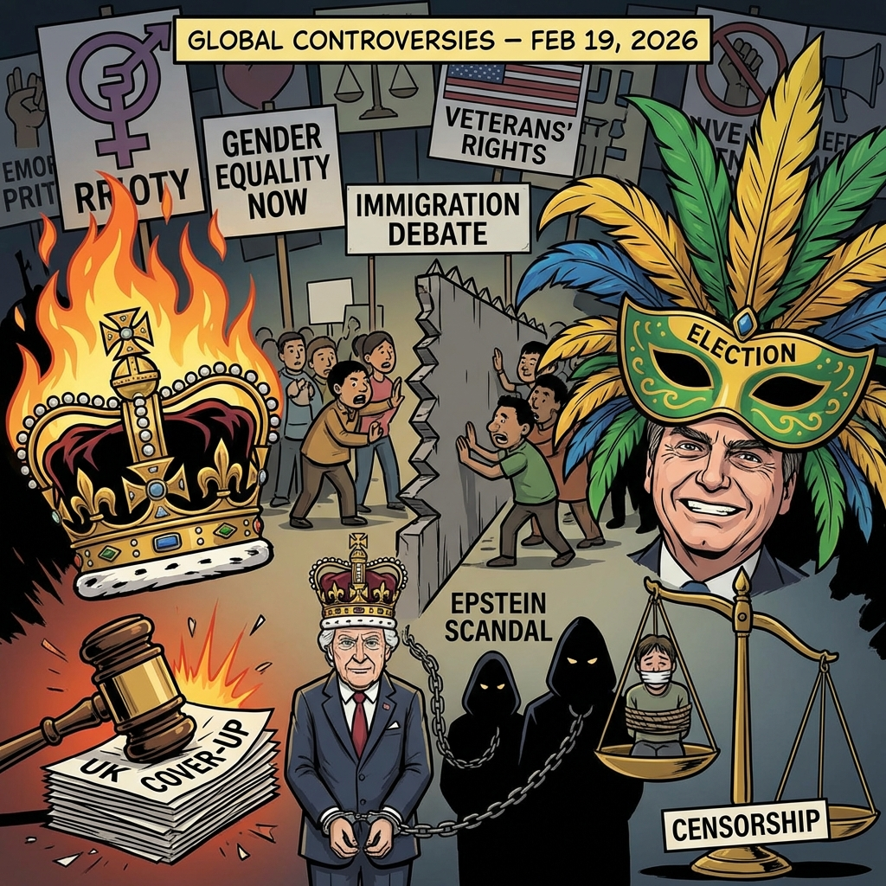

The Daily Globe: UK Grooming Gangs Scandal and Government Cover-Up, Prince Andrew Arrest Tied to Epstein Scandal, and Argentina-Brazil Racism Tensions After Tourist Arrest
Published on 2026-02-20

World
- UK Grooming Gangs Scandal and Government Cover-Up
Explosive allegations that Keir Starmer's Labour government is suppressing evidence of widespread child sexual exploitation by grooming gangs. Court records involving over 25,000 cases set to be deleted, sparking outrage and demands for resignations including London Mayor Sadiq Khan.
- US Immigration Crimes Spark Border Security Debate
Viral posts criticizing lack of Democrat response to American citizens killed by undocumented immigrants, including a 12-year-old child in Missouri and a Washington State Trooper. Tied to broader Biden border policy debates with #BorderCrisis trending.
- Calls to Abolish British Monarchy
Renewed republican movement arguing hereditary privilege is morally wrong and underpins class divide. Trending with #AbolishTheMonarchy amid ongoing royal family scrutiny beyond Prince Andrew scandals.
- Gender Empathy and Men's Mental Health Debate
Viral gorilla enclosure analogy comparing societal empathy for men vs women, sparking heated discourse on male mental health support and gender dynamics globally.
USA
- Prince Andrew Arrest Tied to Epstein Scandal
British royal arrested on suspicion of misconduct in public office, accused of sharing sensitive trade information with Jeffrey Epstein around 2010. King Charles III expressed support for investigation. Major U.S. trend with memes and calls for American investigations.
- ICE Expansion and SAVE Act Immigration Controversy
Trump administration expands ICE authority to detain legal refugees for aggressive rescreening. SAVE Act raises concerns about impact on Native Americans' rights, sparking nationwide immigration policy debates.
- Republican Voting Law Overhaul Proposal
Controversial Republican proposal to overhaul U.S. voting laws resurfaces, with critics decrying voter suppression and supporters framing it as fraud prevention, intensifying post-2024 election tensions.
- VA Veterans' Disability Benefits Cuts
New VA policies tying disability compensation to 'medicated symptoms' draw strong backlash from veterans' advocacy groups, raising concerns about government support for military personnel.
- Epstein Files Document Dump
Fresh document releases fuel conspiracy theories and discussions on unprosecuted elites, intersecting with U.S. politics and high-profile figures.
Brazil
- Argentina-Brazil Racism Tensions After Tourist Arrest
Argentine tourist arrested for alleged racist remarks linked to Vinicius Junior issues, sparking Argentine campaigns discouraging travel to Brazil. Brazilians defend strict anti-racism laws (non-bailable crime) while Argentines criticize 'exaggerated liberty'.
- Threats Against Portuguese Communities in Brazil
After controversy involving Vinicius Junior and an Argentine player at Benfica, reports emerge of death threats and 'hunts' against Portuguese expatriates living in Brazil, fueling anti-foreigner sentiment.
- Lula Effigy at Rio Carnival Sparks Electoral Law Debate
Giant metal effigy of President Lula featured at Rio Carnival sparks debate over potential violation of electoral advertising laws ahead of possible re-election campaign.
- Censorship Case Over Gender Ideology Criticism
Veterinary student faces up to 10 years in prison for social media posts criticizing 'gender ideology', accused of transphobia. High-profile case highlighting government overreach accusations to silence conservative voices.
Topic Index
- grooming-gangs-scandal
- immigration-crisis
- monarchy-abolition
- gender-empathy-debate
- prince-andrew-epstein
- voting-rights-reform
- veterans-benefits-cuts
- racism-laws-tensions